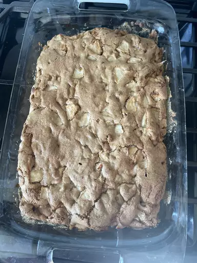

German Apple Cake

Description
German apple cake is a moist, dense cake that keeps well.
It has been a family favorite for 20 years.
Serve with a dusting of confectioners' sugar or topped with a cream cheese frosting.
Ingredients
- 1 cup vegetable oil
- 2 large eggs
- 2 cps white sugar
- 1 tea spoons ground cinnamon
- 1 tea spoon baking soda
- 1/2 teaspoon salt
- 4 cups apples-peeled, cored diced
Steps
- Preheat the oven to 350 degrees F (175 degrees C). Grease and flour a 9x13-inch cake pan.
- Beat oil and eggs in a mixing bowl with an electric mixer until creamy. Add sugar and vanilla; beat well.
- Bake cake in the preheated oven until a toothpick inserted into the center comes out clean, about 45
minutes. Cool cake on a wire rack.